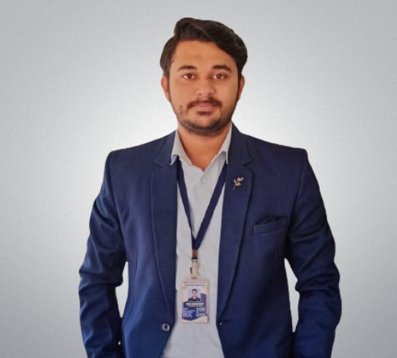

Shekh Adnan Niyariya

Summary
Experienced and result-oriented software developer with 22 months of
experience in .NET Technologies and SQL. For the past 2.5+ years, I’ve
been teaching programming fundamentals and computer science to students.
Additionally, to stay abreast of industry trends, I have expanded my
skills to include MERN Full Stack development. Highly motivated, quick
learner and dedicated team player adept at identifying and resolving
issues, driving efficient remediation, and providing valuable insights
through effective issue reporting and triage.
Education
-
Bachelor of Technology, Computer Science and Engineering - Bharath
Institute of Higher Education and Research, Chennai (2014 - 2018)
Work Experience
Software Engineer - Core Solutions Inc.
May 2018 - March 2020
Development of a Behavioral Health Care product for multiple US clients to
maintain their EHR(Electronic Health Record). Quick learning and team work
helped me demonstrate my skills and proficiency in various key areas:
Front End :
-
Developed and maintained user interface components using HTML, CSS and
JS.
-
Collaborated with design team to ensure the technical feasibility of
UI/UX designs.
- Ensured compatibility and responsiveness of the application.
-
Created and modified multiple modules/pages as per the client
requirements.
Back End :
- Implement server-side logic using .NET framework
- Connected and maintained database schemas using SQL Server.
-
Collaborated with business team to implement client specific logic to
some modules.
- Implemented data validation and other security features.
-
Optimizations to reduce data pull time from databases using procedures.
Team Specific (Billing):
-
Worked in the core team of a very complex product which handled the
billing process of the EHR.
-
In the back end, implemented logic to calculate and generate bills for
different scenarios.
-
Modified and worked on the logic of generating claims for the patients
of the client for insurance purposes.
Throughout this tenure, I have consistently demonstrated my commitment to
ensure clean coding practices, learning swiftly to complete tasks
effectively and deliver valuable insights to support business goals.
Computer Teacher - Swami Atmanand Govt. English Medium School of
Excellence
September 2021 - June 2024
In my primary role, I taught programming fundaments of JS to students,
focusing on practical, hands-on learning. I effectively imparted
foundational programming skills while emphasizing the importance of clean
coding practices.
Skills
HTML, CSS, JavaScript, Node.js, Express.js, React.js, .NET, C#, SQL,
NoSQL, Git
Certifications
- MERN Web Development by 100xdevs
Other
Contact Me